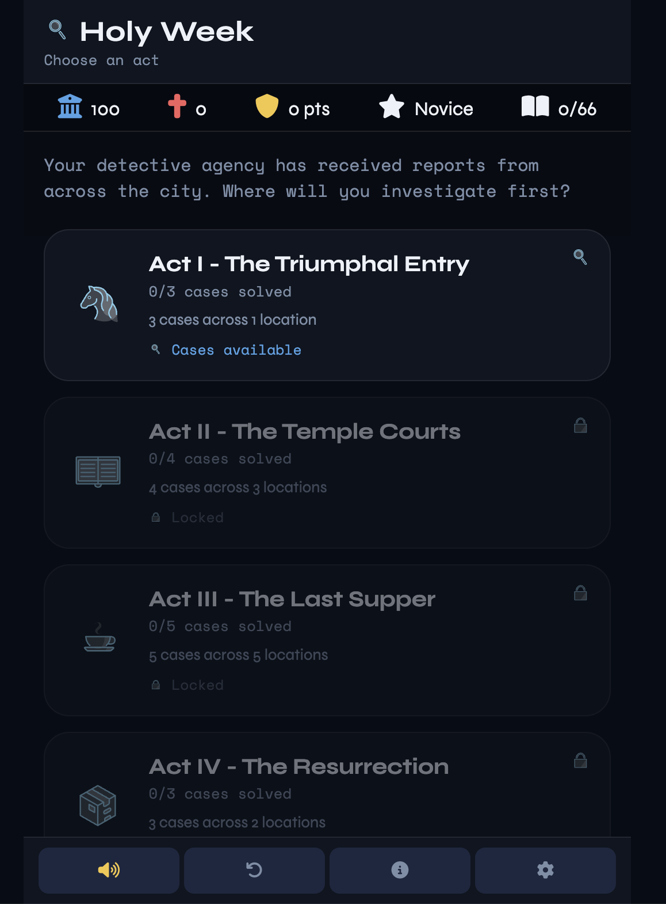
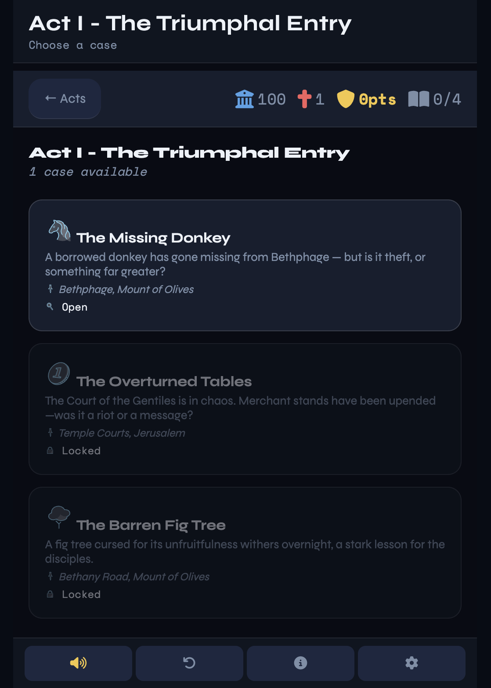
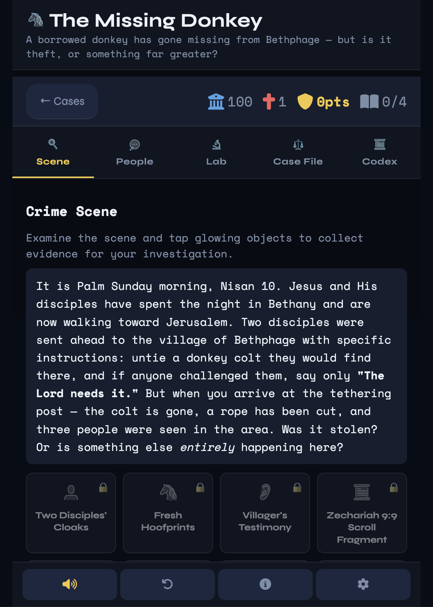
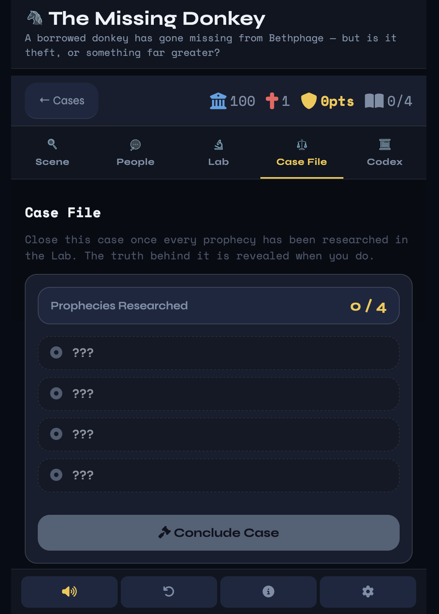
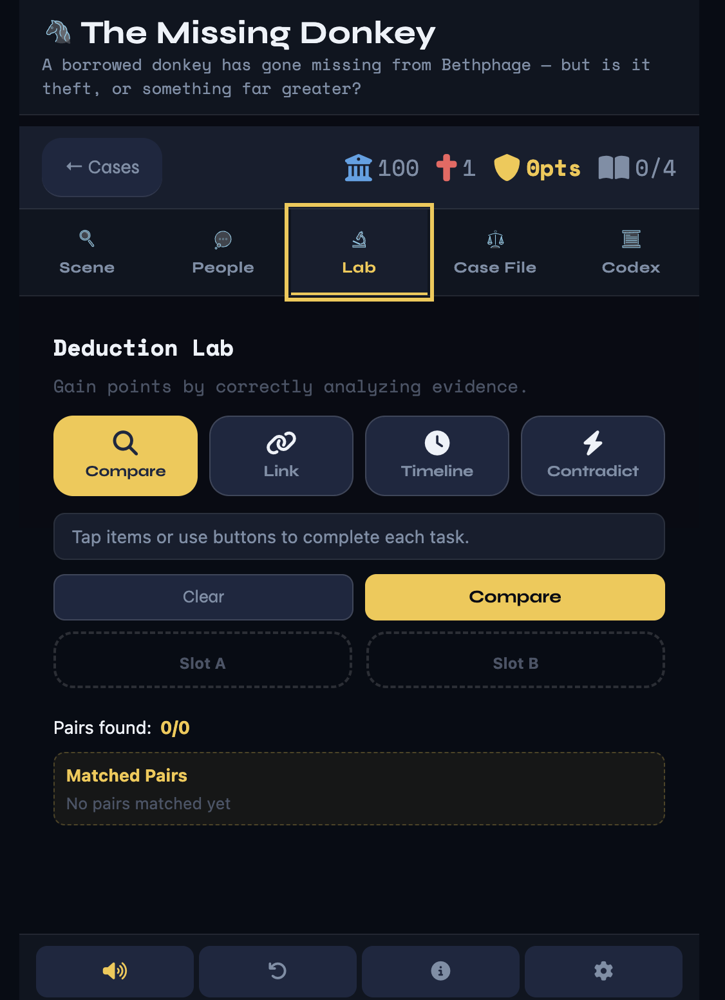
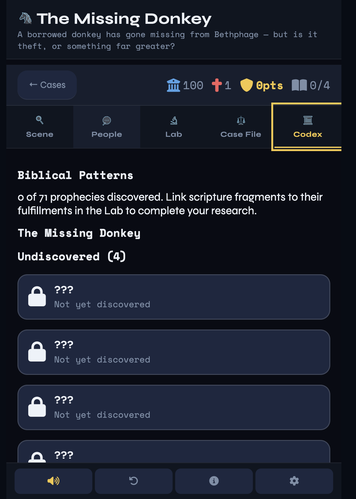

Engine / Loop
Case Manager
Seventeen cases across four acts. Each case tracks evidence, witnesses, deductions, and prophecy links — closing only when every thread is researched and every clue collected.
Case study / 2026 — Educational game
A browser-based investigative detective game set during Holy Week in Jerusalem. Four acts. Sixteen cases. One truth — told across desktop, mobile, 2D and 3D interfaces.
The brief
Build a respectful, playable investigation of the events of Holy Week. Players move through scenes in first-century Jerusalem, interview NPCs, collect evidence in three-dimensional environments and connect biblical prophecies to their fulfilments. The same story is told through four parallel interfaces — each one revealing a different facet of the world.

A single landing page routes players into the live mobile build, the in-progress desktop prototype, the 2D variant, and the tools that built them. Designed as a launcher first — everything one tap away, nothing hidden behind menus.

The Act Map is the player's home base. Cases unlock as evidence and witnesses accumulate, with progress carried forward between sessions. Each act surfaces a different region of Jerusalem — the Temple courts, the Upper Room, the Garden, the walls.

Three.js scenes for the Temple, Upper Room, Garden and city gates. Cannon-es handles physics, Howler delivers spatial audio, and NPCs run on Ink-authored branching dialogue. Players explore, examine, and interview — every object is an evidence opportunity.

The case file is the player's notebook — items, documents and testimonies logged in real time as they're discovered. Filter by type, weight, or source. Contradictions surface as Doubt; consistent patterns build the Investigation Score.

The Lab is where evidence earns its keep. Players pair items, build timelines, and spot contradictions. Successful pairings raise the Research Score; incorrect links add Doubt and reshape faction reputation with the Scribes, Temple, Romans and locals.

The Codex is where Scripture meets evidence. Players match prophecy to fulfilment across multiple cases — surfacing hidden chains like Passover Lamb, Psalm 22, the Day of Atonement, the New Covenant, and Resurrection.
Seventeen cases across four acts. Each case tracks evidence, witnesses, deductions, and prophecy links — closing only when every thread is researched and every clue collected.
Items, documents and testimonies are logged, weighed and cross-referenced. Contradictions surface as Doubt; consistent patterns build the Investigation Score.
Lab puzzles compare, categorise and timeline evidence. Successful pairings raise the Research Score; incorrect links add Doubt and reshape faction reputation.
WhatsApp-style conversations authored in Ink. Witnesses reveal testimonies, evidence, and prophecy rumours through branching dialogue trees.
Three.js scenes for Jerusalem — the Temple, the Upper Room, the Garden, the city walls and gates. Cannon-es physics, Howler spatial audio, Fireworks resolution.
Match Scripture evidence to Fulfillment evidence. Hidden chains surface across multiple cases — Passover Lamb, Psalm 22, Day of Atonement, the New Covenant, Resurrection.
Full 3D experience with globe map, HUD panels, keyboard and mouse controls. Built with Three.js, Cannon-es, and Ink narrative scripting.
View on GitHub ↗Mobile-first interface with touch controls, streamlined panels and the full investigative loop. The primary play surface for the project.
Launch mobile ↗Two-dimensional variant of the mobile experience. Faster to load, easier to teach with — useful for classrooms and slower devices.
View prototype ↗Three-dimensional mobile experience with the deduction engine inlined. A bridge between the desktop and mobile interfaces.
View prototype ↗Standing with the Scribes, Temple, Roman garrison, and locals. Honour hits zero and the case goes cold.
Failed challenges, sloppy deductions and incorrect prophecy links all add Doubt. Final score is reduced by Doubt × 2.
+20 RP per completed prophecy, +25 per hidden chain. The deeper the case, the higher the Research rank.